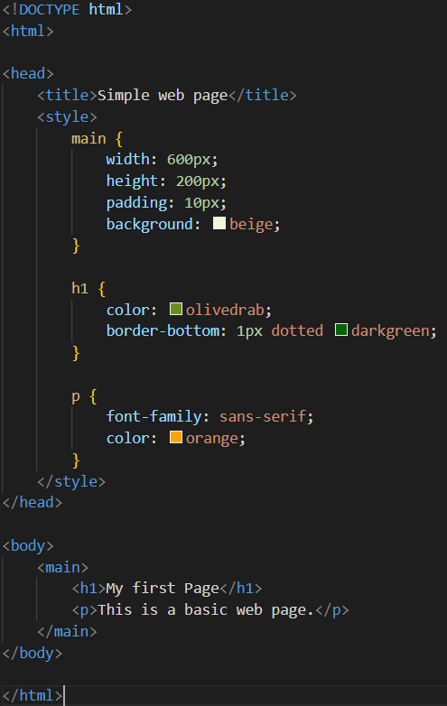

CSS Introduction
CSS (Cascading Style Sheets) is a simply designed language intended to simplify the process of making web pages presentable. CSS allows you to apply styles to HTML documents. It describes how a webpage should look. It prescribes colors, fonts, spacing, etc. In short, you can make your website look however you want. CSS lets developers and designers define how it behaves, including how elements are positioned in the browser. HTML uses tags and CSS uses rulesets. CSS styles are applied to the HTML element using selectors. CSS is easy to learn and understand, but it provides powerful control over the presentation of an HTML document.

Why CSS?
1.CSS saves time: You can write CSS once and reuse the same sheet in multiple HTML pages.
2.Easy Maintenance: To make a global change simply change the style, and all elements in all the webpages will be updated automatically.
3.Search Engines: CSS is considered a clean coding technique, which means search engines won’t have to struggle to “read” its content.
4.Superior styles to HTML: CSS has a much wider array of attributes than HTML, so you can give a far better look to your HTML page in comparison to HTML attributes.
Offline Browsing: CSS can store web applications locally with the help of an offline cache. Using this we can view offline websites.
CSS Versions Release Year

CSS Syntax
CSS comprises style rules that are interpreted by the browser and then applied to the corresponding elements in your document. A style rule set consists of a selector and declaration block.
Selector: A selector in CSS is used to target and select specific HTML elements to apply styles.
Declaration: A declaration in CSS is a combination of a property and its corresponding value.
Webpage using CSS
In this example, we will add some CSS styles inside the HTML document to show how CSS makes a HTML page attractive and user-friendly.
Output